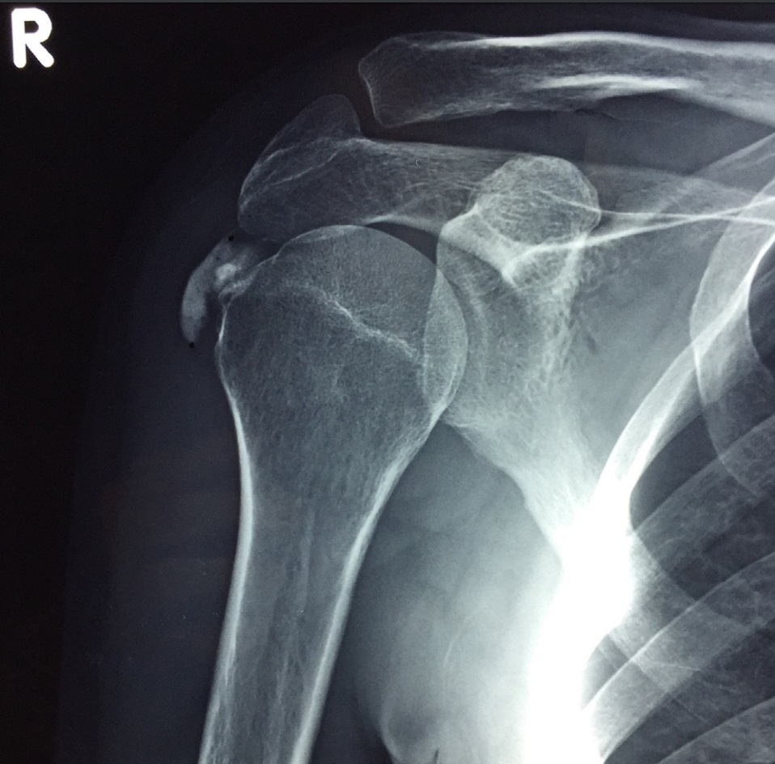

Ficha del catálogo
Tendinopatía calcificante del hombro
- Sistema
- Óseo
- Modalidad
- RX
- Región
- Hombro
- Dificultad
- Intermedio
El depósito de cristales de hidroxiapatita en los tendones del manguito rotador es una causa muy frecuente de hombro doloroso en adultos de edad media, con predominio femenino. El tendón del supraespinoso es el más afectado. La evolución natural pasa por una fase de formación silenciosa, una fase de reabsorción muy dolorosa en la que el depósito se fragmenta y puede migrar a la bolsa subacromial, y una fase de curación. Conocer ese ciclo explica por qué un dolor intensísimo puede resolverse solo en pocas semanas.
Técnica
Anteroposterior de hombro en rotación neutra, interna y externa, que despliega los distintos tendones del manguito. La proyección axial ayuda a situar el depósito en el plano anteroposterior.
Qué observar
- Calcificación densa y homogénea proyectada sobre el trayecto del supraespinoso
- Depósito de bordes definidos en la fase de reposo
- Depósito de bordes borrosos y aspecto de nube en la fase de reabsorción
- Migración del material a la bolsa subacromial con imagen alargada
- Ausencia de trabeculación interna, dato que la separa de un fragmento óseo
- Espacio subacromial conservado y superficie del troquíter sin erosiones
Hallazgos
Calcificación amorfa en el trayecto de un tendón del manguito rotador, con bordes nítidos o difuminados según la fase, sin relación con la cortical humeral.
Perlas
La calcificación de un tendón no tiene trabéculas ni cortical, a diferencia de un fragmento óseo avulsionado. Cuando el depósito se vuelve borroso y disminuye de densidad suele coincidir con el episodio de dolor más intenso y anuncia su desaparición espontánea.
Diagnóstico diferencial
- Avulsión ósea del troquíter
- El fragmento tiene cortical y trabéculas y deja un defecto en el hueso.
- Artropatía por depósito de pirofosfato
- La calcificación asienta en el cartílago articular y no en el tendón.
- Rotura del manguito rotador
- Ascenso de la cabeza humeral y pinzamiento subacromial sin calcificación.
Simuladores
- Calcificaciones vasculares proyectadas sobre el hombro
- Osificación del ligamento coracoacromial
- Restos de material de contraste de estudios previos
Por modalidad
- RX
- Método de elección para detectar y seguir el depósito
- US
- Localiza el depósito, valora su consistencia y guía la punción
- RM
- Puede infravalorar la calcificación por su señal baja en todas las secuencias
Protocolo
Serie de hombro con rotaciones. Ecografía cuando se plantea aspiración o lavado del depósito o cuando se sospecha rotura tendinosa asociada.
Clasificación
Se describen fases de formación, de reposo, de reabsorción y de reparación, con imagen y clínica distintas en cada una.
Errores frecuentes
- Informar el depósito como fragmento óseo por no valorar su estructura interna
- No repetir la radiografía en el paciente con dolor agudo y estudio previo con calcificación densa
- Buscar la calcificación solo en la proyección neutra y no localizar el tendón afectado

hombro tendinopatia calcificante hidroxiapatita supraespinoso bolsa subacromial hombro doloroso cristales